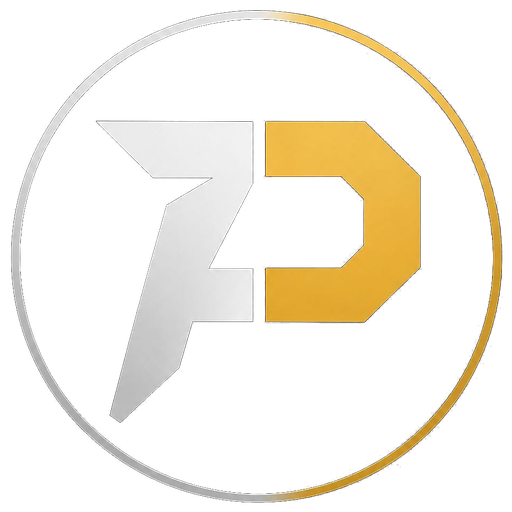
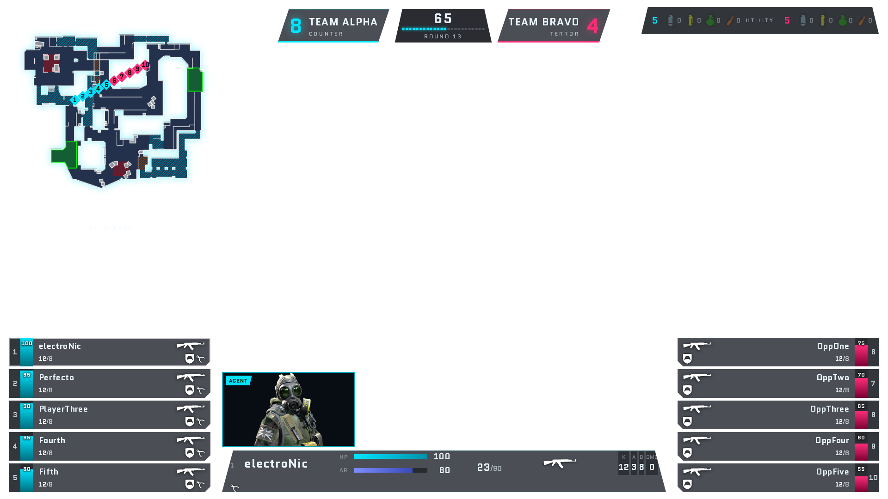
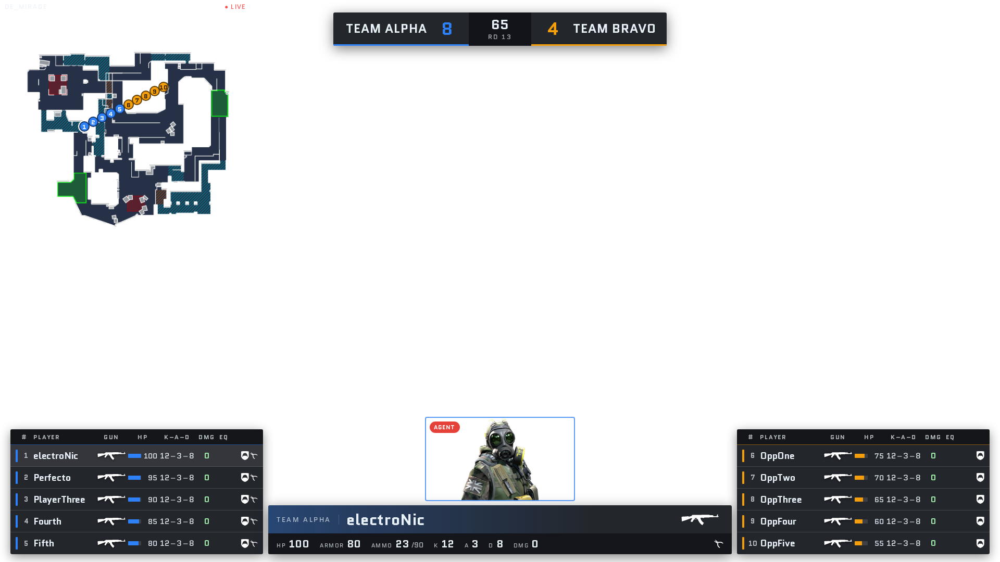
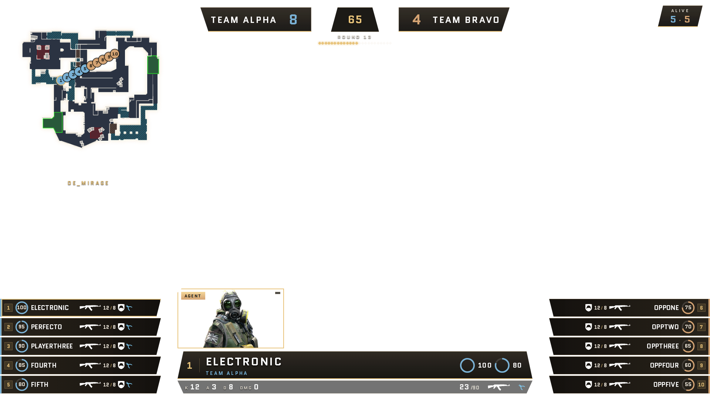
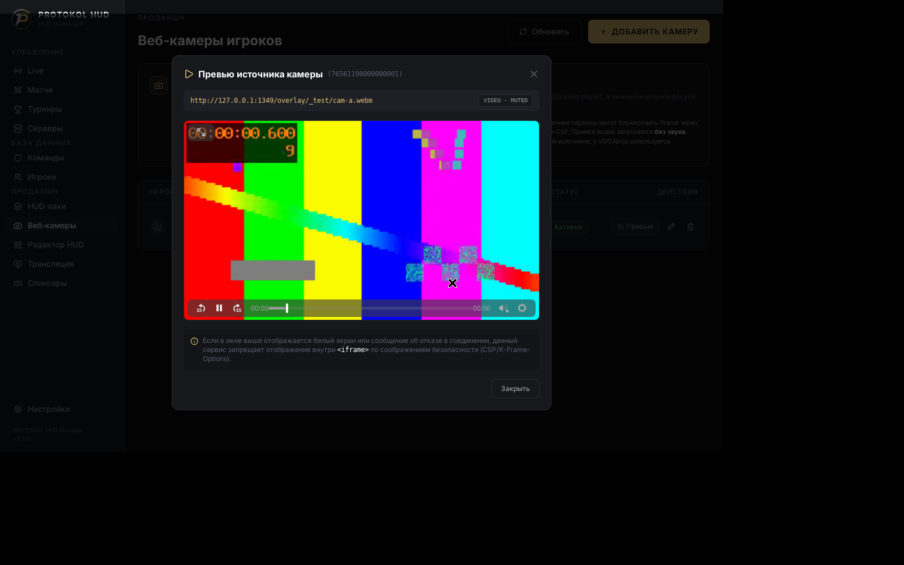
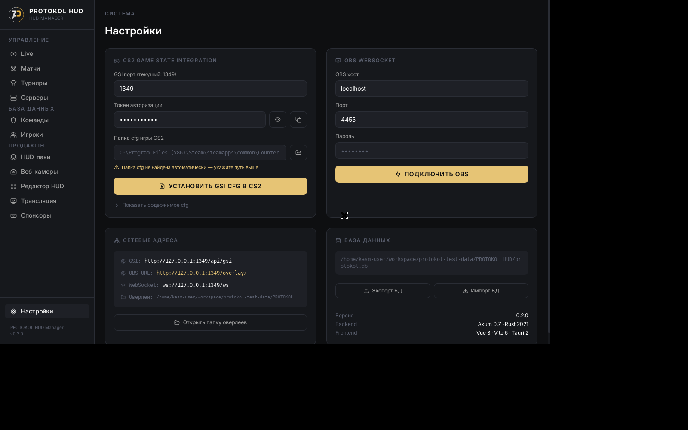

Автономный нативный комбайн управления трансляциями Counter-Strike 2: скомпилированный движок, три независимых стиля оверлеев и автоматический фокус веб-камер игроков по SteamID64.
Переход от ненадежных Node.js/Electron монолитов к скомпилированному нативному Rust-стеку
| Параметр | Lexogrine (LHM) | EideticHM | PROTOKOL Manager |
|---|---|---|---|
| Архитектура ядра | Electron + Chromium | Node.js Server | Tauri v2 + Rust |
| Конфигурация GSI | Ручная правка cfg | Ручное копирование | Автогенерация из GUI |
| Сетевой движок | Express / WS | Express / Socket.io | Axum 0.7 + Tokio WS |
| База данных | NeDB (JSON файлы) | Локальные файлы | SQLite WAL (транзакции) |
| Поддержка вебкамер | Ручная подгонка | Хаки в CSS/OBS | Dual-Mode 16:9 (?cam=live) |
Бэкенд на Rust с Axum и асинхронным рантаймом Tokio обеспечивает надежную обработку телеметрии без внешнего интерпретатора Node.js.
Tauri v2 объединяет интерфейс оператора, прием GSI, хранилище SQLite и отдачу оверлеев в единое настольное приложение.
Управление стилями, ростерами команд, спонсорами и вебкамерами в едином графическом окне без ручной правки JSON-файлов и перезапуска CS2.
overlays/fennec-cyber • Энергичный визуальный стиль со скошенной геометрией для вечерних лиг и шоу-матчей

clip-path: polygon 45°), фоновая кибер-сетка и эффект динамического свечения элементов.#00f0ff для спецназа (CT) и неоновый пурпур/розовый #ff007f для террористов (T).overlays/fennec-broadcast • Сдержанный премиальный интерфейс мирового уровня в традициях BLAST и PGL

backdrop-filter: blur(16px) для мягкой интеграции поверх любой карты и игровых спецэффектов.#1a56db (CT) и теплый янтарный оранжевый #f59e0b (T).?cam=live для внешнего видеослоя OBS.overlays/fennec-championship • Торжественный пакет для решающих стадий чемпионатов и финалов турнирных серий

#0d0f14, металлический графит и градиентное королевское золото #ffd700.Автоматическая привязка видеопотоков к SteamID64 и бесшовное переключение при смене спектатора

Интуитивный интерфейс на Vue 3 + Tailwind CSS с полным контролем сущностей матча

gamestate_integration_protokol.cfg.Обработка пакетов Valve CS2 GSI и векторный радар на 18 соревновательных карт
Результаты комплексного тестирования в изолированной Linux-песочнице и границы текущей валидации
Range.getClientRects.protokol-hud-manager.exe (18.8 МБ) и установщик NSIS (114 МБ) собраны и проверены по SHA-256; запуск нативного GUI Windows находится в статусе ожидания финального signoff.Честный статус готовности платформы к турнирному развертыванию и дорожная карта интеграций
protokol-hud-manager.exe (18.8 МБ) и инсталлятор NSIS (114 МБ) под Windows x64.Развёртывание бинарника v0.1.0, авто-конфигурация CS2 cfg и ключевое разделение потоков наблюдателя
protokol-hud-manager.exe (18.8 МБ). При предупреждении SmartScreen: «Подробнее» → «Выполнить в любом случае».%APPDATA%\PROTOKOL HUD\protokol.db со всеми таблицами при старте.http://127.0.0.1:1349 с автоперебором fallback-портов до :1359.%APPDATA%\PROTOKOL HUD\overlays\ по URL /overlay/<pack>/.<Steam>\...\game\csgo\cfg\gamestate_integration_protokol.cfg с URI /api/gsi.Параметры Browser Source, прозрачный альфа-канал, защита WebSocket и безопасный импорт оверлеев из ZIP
http://127.0.0.1:1349/overlay/<pack>/index.html. Разрешение строго 1920×1080 @ 60 FPS, поле Custom CSS оставить пустым.background: transparent поверх захвата игры. При обновлении CSS/JS: Правый клик в OBS → «Обновить кэш текущей страницы».%APPDATA%\PROTOKOL HUD\overlays\<pack>\. Старые паки OpenHUD мигрируют автоматически при старте.index.html, hud.js, hud.css, assets/ и radars.json. Подключение общего транспорта: <script src="../_core/core.js">.hud_activated мгновенно передается открытым оверлеям по WebSocket.fennec-cyber (неон), fennec-broadcast (ТВ-таблицы/стекло) и fennec-championship (золото/оникс) полностью готовы к эфиру.Привязка SteamID64 к VDO.Ninja, фолбэк на 2D-аватары агентов, чек-лист оператора и устранение сбоев
cameraSlots) и не сбрасывают видеопоток.https://vdo.ninja/?view=...&cleanoutput&transparent. Параметр &muted выставляется ядром принудительно для защиты от эха.?cam=live делает вырез прозрачным под камеру OBS.netstat -ano)./overlay/<name>/index.html (overlay в ед. числе), проверьте файлы в AppData, обновите кэш Browser Source.Текст заметок...